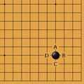
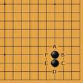
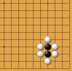

用Swift写围棋App－10气的算法
tags: 应用, 开发随笔
在上一片分片完成之后，计算每一组棋的棋就是水到渠成的事了。
我们还是从最基本的概念入手。一个棋子在棋盘上，与它直线紧邻的空点是这个棋子的“气”。
如下图，一个不在边框上的棋，其周围有4个相邻的空点，即ABCD四个位置。

将这个情形写成测试用例用swift描述就是：
func testLibertyOne(){
let kifu = "(;;B[qq])"
let game = parser.parse(kifu)
game.currentMove = 0
let groups = game.assignGroups()
assert(groups.count == 1)
assert(groups[0].calculateLiberty(game.occupiedLocations()) == 4)
}
如果再下一手黑棋和它相连，成下面的样子：

则2颗棋子连起来了，它们一共有ABCDEF 6口气。将情形二描述成测试用例:
func testLibertyTwo(){
let kifu = "(;;B[qq];B[qr])"
let game = parser.parse(kifu)
game.currentMove = 1
let groups = game.assignGroups()
assert(groups.count == 1)
assert(groups[0].calculateLiberty(game.occupiedLocations()) == 6)
}
如下图所示，这2颗有6口气的棋，如果它们的6个气位都被白棋围住的话，则气为0，成了死子。

将这中情形描述为测试用例：
func testLibertyThree(){
let kifu = "(;;B[qq];B[qr];W[qp];W[rq];W[rr];W[qs];W[pr];W[pq])"
let game = parser.parse(kifu)
game.currentMove = 7
let groups = game.assignGroups()
//assert(groups.count == 2)
assert(groups[2].calculateLiberty(game.occupiedLocations()) == 0)
}
有了测试用例后，实现起来挺简单，每一颗棋，其气数就看它周围的空点是否被其他棋子所占:
// Move类中
func calculateLiberty(occupied:[Location])->Int{
var liberty = 4
if (location.x == 0 || location.x == 19 || location.y == 0 || location.y == 19){
liberty = 3
if (location.x == 0 && location.y == 0
|| location.x == 19 && location.y == 0
|| location.x == 0 && location.y == 19
|| location.x == 19 && location.y == 19
){
liberty = 2
}
}
for l in occupied {
if self.location.isEqual(l) {
21``2 continue
}
if self.location.isConnectedTo(l) {
liberty -= 1
}
}
return liberty
}
而每一片棋的气则是这片棋中所有棋子气数之和：
//在MoveGroup类中
func calculateLiberty(occupied:[Location])->Int{
var liberty = 0
for m in allMoves {
liberty += m.calculateLiberty(occupied)
}
return liberty
这个方法我们还可以用swift的函数式编程特性，写得更像黑魔法一点 :)
//在MoveGroup类中
func calculateLiberty(occupied:[Location])->Int{
return allMoves.reduce(0, combine:{$0 + $1.calculateLiberty(occupied)} )
}
简单的弄一下三个测试用例居然都过了。
非常好！
现在push最新的代码到github:https://github.com/marknote/GoTao
剩下的就是一些细节了。基本可以收工了。